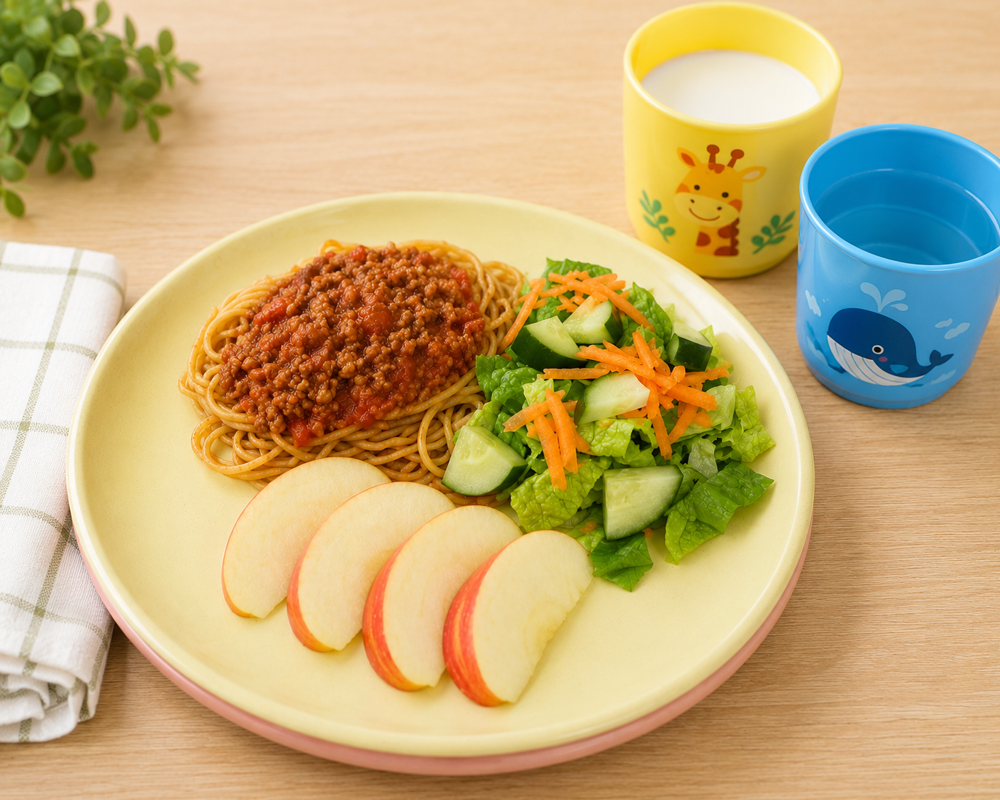

Current Four Week Menu
Download our current rotating menu.
Download MenuHealthy Eating
Healthy eating plays an important role in children's growth, learning, and development. At Children's Circle Daycare, all meals and snacks are prepared fresh onsite in our own kitchen and follow Canada's Food Guide. Our rotating four-week menu offers a variety of balanced meals while accommodating allergies and dietary needs.
Download our current rotating menu.
Download MenuView our Registered Dietitian's endorsement letter.
Download LetterWe work closely with families to safely accommodate food allergies, sensitivities and dietary requirements.
Contact UsOur onsite kitchen prepares nutritious breakfasts, lunches and afternoon snacks every day. Children enjoy a wide variety of meals using fresh ingredients while learning healthy eating habits in a positive and supportive environment.
Menus rotate every four weeks and are designed to provide balanced, child-friendly meals while meeting provincial nutrition guidelines.
